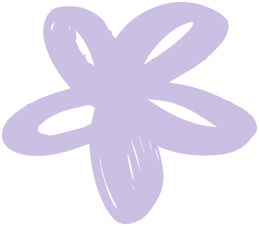
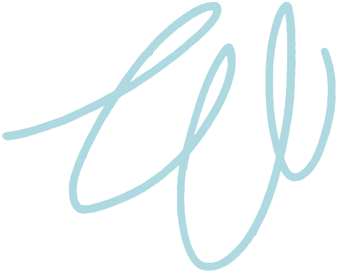

A space to hear yourself again — clarity to decide, quiet in the middle of the noise.

None of this is your failing. It is a field out of alignment, asking for attention.
Thoughts on loop, decisions stuck, a tiredness sleep doesn't fix.
So many demands and opinions around you that your own voice disappears.
The days pass, you get everything done — and feel nothing.

We are made of energy. When one field falls out of balance, the body, the mind and the emotions all feel it.
The session happens remotely, with no need to block your calendar. You don't need to stop what you're doing, meditate or be somewhere quiet. I read your energy field through dowsing, harmonize it with Reiki — and afterwards I send you a written report of what I noticed.
Book your session and pay securely. No need to block time in your calendar.
I read and work in your field, at a distance.
A written report comparing your field before and after, and practical guidance for your day to day.
I spent more than 17 years in tech as a software engineer, until I realized the life I had built no longer matched who I was becoming. In 2023, I found Dowsing — first as part of my own journey, and little by little, also as a way to support other people. Today, I guide Energy Alignment sessions, with Reiki as my main tool for energy harmonization.
I have lived in the noise. I also know the way back.
You deserve to hear yourself.